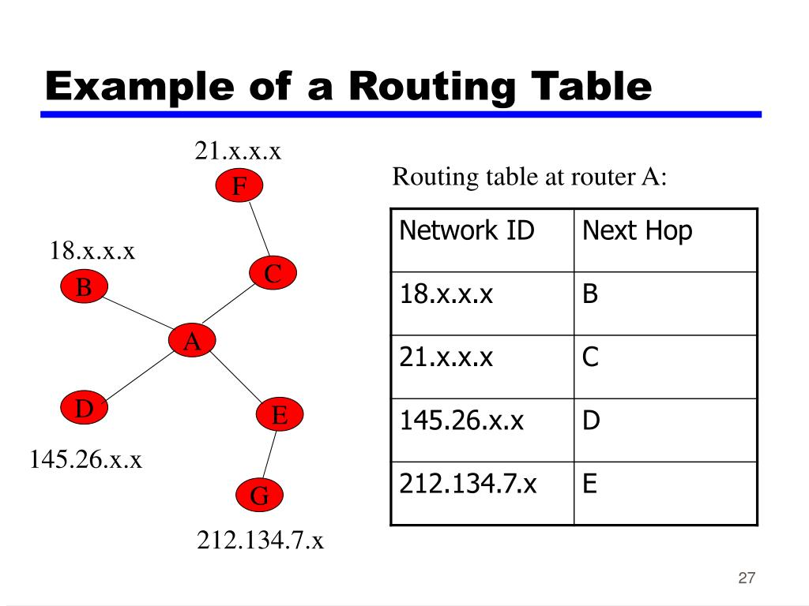

192.168.1.0 terminando em 0 identifica a rede.
192.168.1.1 primeiro dispositivo da rede.
192.168.1.255 Endereço BROADCAST da rede.
BROADCAST -> grita para todos da rede.
0.0.0.0 -> rota default, se não encontrar a rota vai para a padrão configurada
ip route 0.0.0.0 0.0.0.0 23.243.214.1 -> configuração de uma rota default
existe rotamento estatico / dinamico. O PROPIO NOME JA EXPLICA
| Classe | Faixa de IPs | Máscara Padrão | Hosts por Rede | Uso Principal |
| A | 1.0.0.0 - 126.255.255.255 | 255.0.0.0 | ~16 milhões | Grandes corporações |
| B | 128.0.0.0 - 191.255.255.255 | 255.255.0.0 | ~65 mil | Redes médias |
| C | 192.0.0.0 - 223.255.255.255 | 255.255.255.0 | 254 | Pequenas redes / LANs |
| D | 224.0.0.0 - 239.255.255.255 | — | — | Multicast (transmissão em grupo) |
| E | 240.0.0.0 - 255.255.255.255 | — | — | Reservado para testes e pesquisa |
cada roteador tem, e depende do protocolo
usa o numero de saltos como metrica, ou seja para chegar a rede X devo pular por Y roteadores. Sua lista por padrão é atualizada a cada 30 segundos
o RIP v1 usa classes, Porém isso ja esta em desuso então tem o RIP v2 que é melhor e não usa classes.
Cada roteador possui um mapa de toda a rede, que é atualizado apenas quando ocorre uma mudança na rede.
Nisso cada roteador CALCULA qual é o menor caminho possivel usando um valor de custo. (base/largura de banda)
O adm pode alterar os valores usados no calculo se quiser. tambem suporta
Pode ser dividido em hierarquia de AREAS, para o mapa ser menor. todas as areas devem ser conectadas a area 0 backbone.
Mais rapida que o Rip porem os roteadores precisam CALCULAR então precisam ser mais potentes.
Existe um roteador desiguinado DR e um roteador desiguinado de Backup BDR, basicamente funcionam como um switch na topologia estrela.
Ele é um protocolo muito mais lento porem com politicas de atributos e regras.
Como o RIP ele não precisa calcular, porem ele não usa o "menor caminho" como metrica
Ele segue regras e tem ate um historico sobre por onde a informação passou (AS_PATH)
| Porta | Nome | Descrição | Camada OSI |
|---|---|---|---|
| 80, 443 | HTTP/HTTPS | Protocolo para transferência de hipertexto (páginas web). HTTPS é a versão segura com criptografia. | Aplicação (7) |
| 20, 21 | FTP | Protocolo para transferência de arquivos entre cliente e servidor (não criptografado). | Aplicação (7) |
| 22 | SFTP | Versão segura do FTP que utiliza SSH para criptografar a transferência de arquivos. | Aplicação (7) |
| 25, 587 | SMTP | Protocolo para envio de e-mails entre servidores. | Aplicação (7) |
| 110, 995 | POP3 | Protocolo para download de e-mails do servidor para o cliente local (normalmente apaga do servidor após download). | Aplicação (7) |
| 143, 993 | IMAP | Protocolo para gerenciamento de e-mails diretamente no servidor, mantendo sincronização entre dispositivos. | Aplicação (7) |
| 53 | DNS | Converte nomes de domínio (ex: google.com) em endereços IP. | Aplicação (7) |
| 389, 636 | LDAP | Protocolo para acesso e gerenciamento de serviços de diretório (como Active Directory). | Aplicação (7) |
| 2049 | NFS | Permite compartilhar arquivos entre sistemas em uma rede como se fossem locais. | Aplicação (7) |
| 23 | Telnet | Protocolo antigo para acesso remoto a servidores (não criptografado, substituído pelo SSH). | Aplicação (7) |
| 22 | SSH | Protocolo criptografado para acesso remoto seguro a servidores e transferência de arquivos. | Aplicação (7) |
| 161, 162 | SNMP | Usado para monitorar e gerenciar dispositivos de rede (roteadores, switches). | Aplicação (7) |
| - | STP | Evita loops em redes com switches redundantes (IEEE 802.1D). | Enlace (2) |
| - | RSTP | Versão melhorada do STP (IEEE 802.1w) com convergência mais rápida. | Enlace (2) |
| - | MSTP | Extensão do RSTP que agrupa VLANs em árvores lógicas (IEEE 802.1s). | Enlace (2) |
| - | HSRP | Protocolo da Cisco para redundância de gateway padrão (ativo/standby). | Rede (3) |
| - | VRRP | Padrão aberto (IEEE 802.1q) para redundância de gateway, similar ao HSRP. | Rede (3) |
| 500, 4500 | IPSec | Conjunto de protocolos para criptografia de tráfego IP (VPNs). | Rede (3) |
| 443, 465, 993 | SSL/TLS | Criptografia para comunicações seguras (ex: HTTPS, FTPS). | Sessão (5) e Apresentação (6) |
| - | TCP | Orientado a conexão, garante entrega confiável de dados (checksum, ACK). | Transporte (4) |
| - | UDP | Sem conexão, mais rápido que TCP mas não confiável (usado em DNS, VoIP). | Transporte (4) |
| - | IP | Roteamento de pacotes na rede (IPv4/IPv6). | Rede (3) |
| - | ICMP | Mensagens de controle (ex: ping, traceroute). | Rede (3) |
| - | ARP | Mapeia endereços IP para MAC (camada 2). | Enlace (2) |
| - | RARP | Oposto do ARP: converte MAC para IP (obsoleto, substituído por DHCP). | Enlace (2) |
| - | GLBP | Protocolo Cisco para balanceamento de carga entre gateways. | Rede (3) |
| - | CARP | Similar ao VRRP, usado em sistemas open-source (ex: pfSense). | Rede (3) |
| 67, 68 | DHCP | Atribui IPs dinâmicos e configurações de rede a dispositivos. | Aplicação (7) |
| - | IEEE 802.11b/g/n | Padrões sem fio (2.4 GHz e 5 GHz) para redes locais. | Física (1) e Enlace (2) |
| - | IEEE 802.11ac/ax | Evolução do Wi-Fi para maior velocidade (MU-MIMO, OFDMA). | Física (1) e Enlace (2) |
revisando Internet (Pública) ↳ Aberta a todos (ex.: sites globais). Intranet (Privada) ↳ Restrita a colaboradores (ex.: sistema interno). Extranet (Híbrida) ↳ Parceiros acessam com permissão (ex.: portal de clientes).